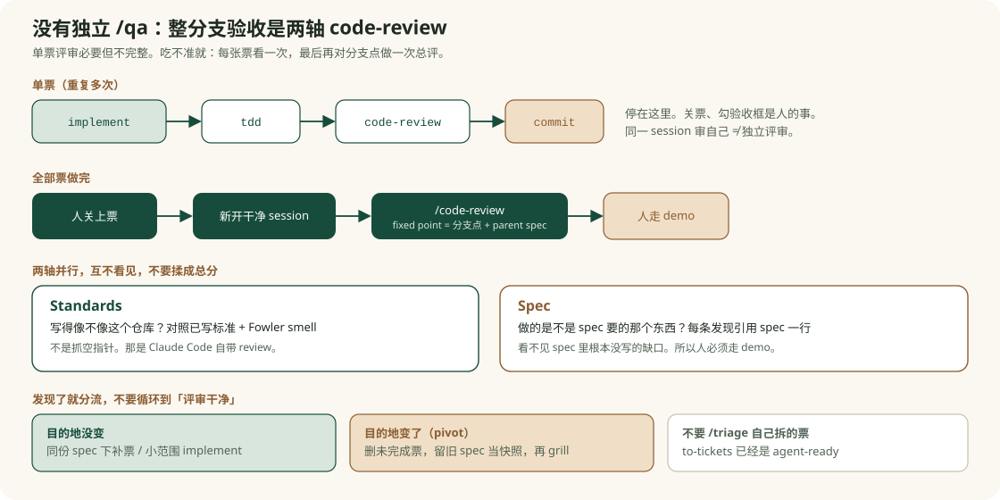

单票 implement 里的 review
看这一张票的小 diff。漏掉票与票的交互，也看不见 spec 里没写的需求。
Reference
忘了主线收尾该做什么时，先抓一句：没有独立的整分支 /qa。单票评审必要但不完整；整分支对照 spec 的动作，是新开干净 session，对分支点再跑一次两轴 /code-review。目的地没变就补票，不要默认新开 spec；本地 .scratch 里自己拆的票不必再跑 /triage。

implement 里的 review看这一张票的小 diff。漏掉票与票的交互，也看不见 spec 里没写的需求。
/code-reviewSpec 轴：是不是对的东西。Standards 轴：像不像这个仓库。不是传统抓 bug 的人审。
/triage外来原始工单的上坡入口。不是验收步骤，也不该套在 to-tickets 产出的票上。
关票、勾验收框、按 demo 点一遍。spec 漏掉的需求，通常只有这里能看见。
观察行为的公开边界，不伸进内部。spec 先约定，tdd 只在那里测，review 会查有没有用上没约定的 seam。
| Standards | Spec | |
|---|---|---|
| 问题 | Is it built right? | Is it the right thing? |
| 发现类型 | 违反仓库标准；Fowler smell（判断题） | 缺了 / 多做了 / 做歪了 |
| 看不见什么 | 东西做错但风格合格 | spec 里根本没写的需求 |
| 步骤 | 做什么 |
|---|---|
| 关票 | 自己勾验收框、关掉已完成的 ticket。 |
| 换窗口 | 新开干净 session，不要沿用最后一张票的实现上下文。 |
| 总评 | /code-review：fixed point = 分支点；spec = .scratch/<feature>/spec.md 或对应 issue。 |
| 分轴读 | 两块报告不要揉成总分。每条发现先核对它引用的那一行。 |
| 人走路径 | 对照 acceptance criteria 和 user stories 真实点一遍。 |
| 分流 | 按下面的表处理。不要把 review 循环到“再也挑不出东西”。 |
| 情况 | 做 |
|---|---|
| 实现跑偏，spec 仍对 | 同一份 spec 下补票 |
| spec 漏了，destination 没变 | 必要时 grill，然后在同一个 issues/ 补票；长期判断写进 CONTEXT.md / ADR |
| destination 变了 | 删未完成的票，留旧 spec 当快照，重新 grill / to-spec |
| 别人丢来的原始报告 | /triage |
你自己 to-tickets 拆出来的票 |
不要 triage |
.scratch 记什么这是本地 markdown tracker，和 GitHub Issues 二选一。
spec.md 是 parent spec；issues/<NN>-<slug>.md 是一张票；Status: 行是状态落点。独唱规划流里，验收缺口补在同一个 issues/ 即可。